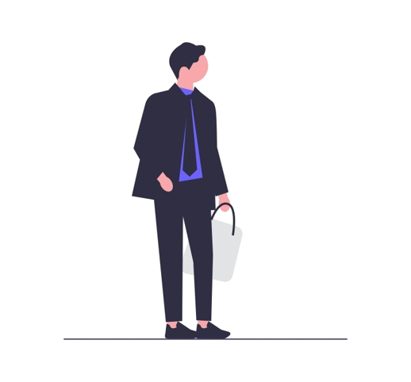

Sobre
Atualmente, com 17 anos, estudo Análise e Desenvolvimento de Sistemas (ADS) na Estácio, na modalidade EAD.
Meu interesse pela programação começou em 2021, durante a Imersão Dev da Alura. Devido à falta de um computador, só pude começar a estudar programação no meio do ano de 2023.
Apesar de às vezes sentir a síndrome do impostor, percebo que durante esse tempo aprendi coisas que no início pareciam muito distantes da minha realidade.
No meu futuro, almejo trabalhar no exterior. Após alguns anos de experiência com front-end, pretendo explorar áreas como back-end e desenvolvimento mobile.
Tecnologias

HTML

CSS

JS

Github
Git

Tailwind
Certificados